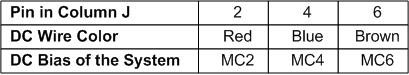
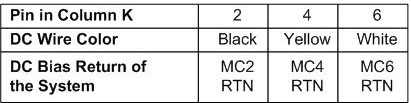

- 00000018WIA303DCE20GYZ
- id_131074642.0
- Feb 22, 2021 1:46:54 AM
3.0T HD 3-Channel Shoulder Coil Troubleshooting
Personnel Requirements
| Required Persons | Procedure |
| 1 | 30 minutes |
Overview
The following information can be used to troubleshoot common problems with the 3.0T HD 3-Channel Shoulder Coil by GE.
Preliminary Requirements
Tools and Test Equipment
-
Digital volt meter
-
Phantom, 2359877
-
Phantom positioner, 2375136-3
Required Conditions
The HD SHOULDER coil configuration name must be installed to run the MCQA tool.
Procedure
Receiving No Signal
Problem:
Unable to prescan, or scanning but receiving no signal.
Possible Solution:
-
Ensure the green light above port A is illuminated. This indicates the coil is properly plugged into the system.
-
Ensure that the system has correctly detected the coil by checking the Currently Connected coils option in the Coil Selection window.
-
Ensure that the landmark is correct (see 3.0T HD 3-Channel Shoulder Coil Setup for MCQA Test) and that the cradle has not unlatched.
-
Perform a continuity check on the output cable (see Output Cable Check). The continuity check must be performed by a GE-authorized Service Engineer.
-
Ensure that the coil is positioned with the cable exiting toward the bore.
-
Ensure that the cable is not looped or crossed.
If you still cannot get a signal, try to scan (transmit and receive) with the body coil. For this test, be sure to remove the imaging coil from the magnet bore before you scan with the body coil. If you still receive no signal, the problem is probably with the MR system. If the scan completes successfully, there is probably a problem with the shoulder coil. If the body coil scan is satisfactory, acquire a scan using another coil of the exact same type (receive only, phased array). If the image quality is visibly improved, there may be a problem with the shoulder coil. Contact GE for further assistance. If you are unable to scan with the substitute coil, there may be a system problem related to this particular coil type.
Image Quality
Problem:
Poor IQ, shaded images, or MCQA failure.
Possible Solution:
-
Perform a continuity check on the output cable (Output Cable Check). The continuity check must be performed by a GE-authorized Service Engineer.
-
Ensure that there are no loops in the cables.
-
Ensure that there are no metal or ferromagnetic objects close to the coil, patient, or magnet (such as a safety pin or hair pin).
-
Ensure that the coil is properly positioned.
-
Ensure that the center frequency is within the frequency adjustment range for the system.
-
Ensure that the R1, R2, and TG values from the prescan are within normally expected ranges.
If you have not done so already, perform the coil quality assurance test (refer to Operator Manual, 2417405). If the values you obtain do not fall within normal operating parameters, investigate this further by performing a phantom scan with the body coil. For this test, be sure to remove the imaging coil from the magnet bore before you scan with the body coil. If you still have the same problems, there is probably an MR system problem. If the body coil scan is satisfactory, acquire a scan using another coil of the exact same type (receive only, phased array). If the image quality is visibly improved, there may be a problem with the shoulder coil. Contact GE for further assistance. If the image quality still suffers, there may be a system problem related to imaging with this type of coil.
Artifacts
Problem:
Black line or signal void on the image.
Possible Solution:
Ensure that there is no metal present in the area being scanned in or on the patient.
Output Cable Check
Visual Check
Visually inspect the coil connector. Figure 2 shows the pin layouts of the coil connector. The connector of the shoulder coil has 2 pins in column A, 5 pins in column J, 3 pins in column K, 5 pins in column M, 3 RF coaxial connectors in C2, C4, and D2. If there are any broken, deformed, or recessed pins or coaxial connectors, perform a cable replacement (see 3.0T HD 3-Channel Shoulder Coil FRUs and Cable Replacement).
Do not measure the continuity of the center pin of the coaxial connectors under any circumstances. They are extremely fragile and can be damaged if improper tools are used.

Check for continuity of DC lines in the external cable:
-
Remove the cable assembly from the coil (see the cable replacement procedure in 3.0T HD 3-Channel Shoulder Coil FRUs and Cable Replacement).
-
There are three pins connecting to DC wires in column J: J2, J4, and J6 (Figure 2).
The table below shows these pins and their corresponding DC wires. Use a digital volt meter to check the resistance between the pin in column J and the corresponding DC wire (see Figure 3). The resistance should be 21.0 ±2.0 ohms. If any resistance reading is not within this range, perform a cable replacement (see 3.0T HD 3-Channel Shoulder Coil FRUs and Cable Replacement).

Figure 3. Measure Resistance of DC Line 
There are three pins connecting to DC wires in column K: K2, K4, K6 (Figure 2).
The table below shows these pins and their corresponding DC wires. Use a digital volt meter to check the resistance between the pin in column K and the corresponding DC wire (Figure 4). The resistance should be 1.1 ±0.3 ohm. If any resistance reading is not within this range, perform a cable replacement (see 3.0T HD 3-Channel Shoulder Coil FRUs and Cable Replacement).

Figure 4. Measure Resistance of DC Return Line 
-
Check if any pin in J2, J4, or J6 is shorted to ground. Any pin in K2, K4, and K6 can be used as ground. If any pin is shorted to ground, perform a cable replacement (see 3.0T HD 3-Channel Shoulder Coil FRUs and Cable Replacement).
Preamp Bias Continuity Check
Pin 3 in row M is connected to three RF cables. The system supplies the preamp bias voltage through pin M3 and RF cables to the coil. Referring to Figure 2, find Pin 3 in row M. Use a digital voltmeter to check resistance between pin M3 and the center pin of the SMB connector at the end of each RF cable (Figure 5). The resistance should be 7.5 ±1.0 ohm. If any resistance reading is not within this range, perform a cable replacement (see 3.0T HD 3-Channel Shoulder Coil FRUs and Cable Replacement).